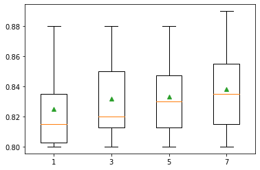
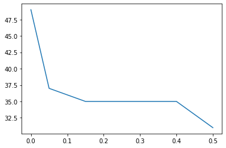
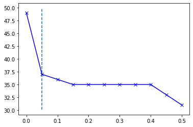

Data Cleaning Guide
By Alberto García Hernández
1 January 2021
Download Notebook
import pandas as pd
import numpy as np
1. Basic Functions
from sklearn.datasets import load_iris
iris = load_iris()
df_iris = pd.DataFrame(data= np.c_[iris['data'], iris['target']],
columns= iris['feature_names'] + ['target'])
df_iris.head()
| sepal length (cm) | sepal width (cm) | petal length (cm) | petal width (cm) | target | |
|---|---|---|---|---|---|
| 0 | 5.1 | 3.5 | 1.4 | 0.2 | 0.0 |
| 1 | 4.9 | 3.0 | 1.4 | 0.2 | 0.0 |
| 2 | 4.7 | 3.2 | 1.3 | 0.2 | 0.0 |
| 3 | 4.6 | 3.1 | 1.5 | 0.2 | 0.0 |
| 4 | 5.0 | 3.6 | 1.4 | 0.2 | 0.0 |
1.1 Constant Values
print(df_iris.shape)
for i in df_iris.columns:
if df_iris[i].nunique()==1:
df_iris.drop(i, axis=1, inplace=True)
print(df_iris.shape)
(150, 5)
(150, 5)
1.2 Duplicates
print(df_iris.shape)
df_iris.drop_duplicates(inplace=True)
print(df_iris.shape)
(150, 5)
(149, 5)
1.3 Missing Data
df_missings = pd.read_csv('data/missings.csv', header=None)
df_missings.head()
| 0 | 1 | 2 | 3 | 4 | 5 | 6 | 7 | 8 | 9 | ... | 18 | 19 | 20 | 21 | 22 | 23 | 24 | 25 | 26 | 27 | |
|---|---|---|---|---|---|---|---|---|---|---|---|---|---|---|---|---|---|---|---|---|---|
| 0 | 2 | 1 | 530101 | 38.50 | 66 | 28 | 3 | 3 | ? | 2 | ... | 45.0 | 8.4 | ? | ? | 2 | 2 | 11300 | 0 | 0 | 2 |
| 1 | 1 | 1 | 534817 | 39.2 | 88 | 20 | ? | ? | 4 | 1 | ... | 50 | 85 | 2 | 2 | 3 | 2 | 2208 | 0 | 0 | 2 |
| 2 | 2 | 1 | 530334 | 38.30 | 40 | 24 | 1 | 1 | 3 | 1 | ... | 33.0 | 6.7 | ? | ? | 1 | 2 | 0 | 0 | 0 | 1 |
| 3 | 1 | 9 | 5290409 | 39.10 | 164 | 84 | 4 | 1 | 6 | 2 | ... | 48.0 | 7.2 | 3 | 5.3 | 2 | 1 | 2208 | 0 | 0 | 1 |
| 4 | 2 | 1 | 530255 | 37.30 | 104 | 35 | ? | ? | 6 | 2 | ... | 74.0 | 7.4 | ? | ? | 2 | 2 | 4300 | 0 | 0 | 2 |
5 rows × 28 columns
df_missings = df_missings.replace('?', np.nan)
pd.DataFrame(data={'missings':df_missings.isnull().sum(),
'percent_missing': df_missings.isnull().sum() / len(df_missings)},
index=df_missings.columns)
| missings | percent_missing | |
|---|---|---|
| 0 | 1 | 0.003333 |
| 1 | 0 | 0.000000 |
| 2 | 0 | 0.000000 |
| 3 | 60 | 0.200000 |
| 4 | 24 | 0.080000 |
| 5 | 58 | 0.193333 |
| 6 | 56 | 0.186667 |
| 7 | 69 | 0.230000 |
| 8 | 47 | 0.156667 |
| 9 | 32 | 0.106667 |
| 10 | 55 | 0.183333 |
| 11 | 44 | 0.146667 |
| 12 | 56 | 0.186667 |
| 13 | 104 | 0.346667 |
| 14 | 106 | 0.353333 |
| 15 | 247 | 0.823333 |
| 16 | 102 | 0.340000 |
| 17 | 118 | 0.393333 |
| 18 | 29 | 0.096667 |
| 19 | 33 | 0.110000 |
| 20 | 165 | 0.550000 |
| 21 | 198 | 0.660000 |
| 22 | 1 | 0.003333 |
| 23 | 0 | 0.000000 |
| 24 | 0 | 0.000000 |
| 25 | 0 | 0.000000 |
| 26 | 0 | 0.000000 |
| 27 | 0 | 0.000000 |
df_missings[3] = df_missings[3].astype(float)
df_missings[3] = df_missings[3].fillna(df_missings[3].mean())
df_missings[5] = df_missings[5].astype(float)
df_missings[5] = df_missings[5].fillna(df_missings[5].median())
from sklearn.impute import SimpleImputer
for i in df_missings.columns:
df_missings[i] = df_missings[i].astype(float)
df_missings_val = df_missings.values
print('Missing: %d' % sum(np.isnan(df_missings_val).flatten()))
imputer = SimpleImputer(strategy='mean')
df_missings_val = imputer.fit_transform(df_missings_val)
print('Missing: %d' % sum(np.isnan(df_missings_val).flatten()))
Missing: 1487
Missing: 0
Categorical data
cat_data = pd.read_csv('data/categorical_input.csv', header=None)
cat_data.head()
| 0 | 1 | 2 | 3 | 4 | 5 | 6 | 7 | 8 | 9 | |
|---|---|---|---|---|---|---|---|---|---|---|
| 0 | '40-49' | 'premeno' | '15-19' | '0-2' | 'yes' | '3' | 'right' | 'left_up' | 'no' | 'recurrence-events' |
| 1 | '50-59' | 'ge40' | '15-19' | '0-2' | 'no' | '1' | 'right' | 'central' | 'no' | 'no-recurrence-events' |
| 2 | '50-59' | 'ge40' | '35-39' | '0-2' | 'no' | '2' | 'left' | 'left_low' | 'no' | 'recurrence-events' |
| 3 | '40-49' | 'premeno' | '35-39' | '0-2' | 'yes' | '3' | 'right' | 'left_low' | 'yes' | 'no-recurrence-events' |
| 4 | '40-49' | 'premeno' | '30-34' | '3-5' | 'yes' | '2' | 'left' | 'right_up' | 'no' | 'recurrence-events' |
pd.DataFrame(data={'missings':cat_data.isnull().sum(),
'percent_missing': cat_data.isnull().sum() / len(cat_data)},
index=cat_data.columns)
| missings | percent_missing | |
|---|---|---|
| 0 | 0 | 0.000000 |
| 1 | 0 | 0.000000 |
| 2 | 0 | 0.000000 |
| 3 | 0 | 0.000000 |
| 4 | 8 | 0.027972 |
| 5 | 0 | 0.000000 |
| 6 | 0 | 0.000000 |
| 7 | 1 | 0.003497 |
| 8 | 0 | 0.000000 |
| 9 | 0 | 0.000000 |
for i in cat_data.columns:
cat_data[i] = cat_data[i].fillna(cat_data[i].mode()[0])
SimpleImputer + Regression + Crossvalidation
from sklearn.impute import SimpleImputer
from sklearn.preprocessing import MinMaxScaler
from sklearn.model_selection import cross_val_score
from sklearn.model_selection import RepeatedStratifiedKFold
from sklearn.linear_model import LogisticRegression
from sklearn.pipeline import Pipeline
from matplotlib import pyplot as plt
results = list()
df_missings_val = df_missings.values
ix = [i for i in range(df_missings_val.shape[1]) if i != 23]
X, y = df_missings_val[:, ix], df_missings_val[:, 23]
strategies = ['mean', 'median', 'most_frequent', 'constant']
for s in strategies:
steps = list()
steps.append(('imputer', SimpleImputer(strategy=s)))
steps.append(('scaler', MinMaxScaler()))
steps.append(('model', LogisticRegression()))
pipeline = Pipeline(steps=steps)
cv = RepeatedStratifiedKFold(n_splits=3, n_repeats=2, random_state=1)
scores = cross_val_score(pipeline, X, y, scoring='accuracy', cv=cv, n_jobs=-1)
results.append(scores)
print('>%s %.3f (%.3f)' % (s, np.mean(scores), np.std(scores)))
plt.boxplot(results, labels=strategies, showmeans=True)
plt.show()
>mean 0.818 (0.023)
>median 0.823 (0.028)
>most_frequent 0.832 (0.033)
>constant 0.840 (0.013)

KNNImputer + Regression + Crossvalidation
Each sample’s missing values are imputed using the mean value from n_neighbors
from sklearn.impute import KNNImputer
results = list()
strategies = [str(i) for i in [1,3,5,7]]
for s in strategies:
steps = list()
steps.append(('imputer', KNNImputer(n_neighbors=int(s))))
steps.append(('scaler', MinMaxScaler()))
steps.append(('model', LogisticRegression()))
pipeline = Pipeline(steps=steps)
cv = RepeatedStratifiedKFold(n_splits=3, n_repeats=2, random_state=1)
scores = cross_val_score(pipeline, X, y, scoring='accuracy', cv=cv, n_jobs=-1)
results.append(scores)
print('> %s %.3f (%.3f)' % (s, np.mean(scores), np.std(scores)))
plt.boxplot(results, labels=strategies, showmeans=True)
plt.show()
> 1 0.825 (0.028)
> 3 0.832 (0.029)
> 5 0.833 (0.027)
> 7 0.838 (0.030)

2. Outliers
2.1 Manual Gaussian Data
from numpy.random import seed
from numpy.random import randn
seed(1)
data = 5 * randn(1000) + 50
mean, std = np.mean(data), np.std(data)
print('mean=%.3f stdv=%.3f' % (mean, std))
mean=50.194 stdv=4.905
# define outliers
cut_off = std * 3
lower, upper = mean - cut_off, mean + cut_off
outliers = [x for x in data if x < lower or x > upper]
print('Identified outliers: %d' % len(outliers))
Identified outliers: 4
clean_data = [x for x in data if x >= lower and x <= upper]
print('Non-outlier observations: %d' % len(clean_data))
Non-outlier observations: 996
2.2 Manual Non Gaussian Data
# calculate interquartile range
q25, q75 = np.percentile(data, 25), np.percentile(data, 75)
iqr = q75 - q25
print('Percentile: 25th=%.3f, 75th=%.3f, IQR=%.3f' % (q25, q75, iqr))
Percentile: 25th=46.999, 75th=53.520, IQR=6.521
# calculate the outlier cutoff
cut_off = iqr * 1.5
lower, upper = q25 - cut_off, q75 + cut_off
# identify outliers
outliers = [x for x in data if x < lower or x > upper]
print('Identified outliers: %d' % len(outliers))
Identified outliers: 9
# remove outliers
clean_data = [x for x in data if x >= lower and x <= upper]
print('Non-outlier observations: %d' % len(clean_data))
Non-outlier observations: 991
2.3 LocalOutlierFactor
LocalOutlierFactor compares the density of each sample with the density of its nearest neighbors.
from sklearn.neighbors import LocalOutlierFactor
data = df_iris.values
X, y = data[:, :-1], data[:, -1]
print(f'Raw observations:{len(X)}')
Raw observations:149
lof = LocalOutlierFactor()
lof_result = lof.fit_predict(X)
mask = lof_result != -1
print(f'Identified outliers: {np.size(mask) - np.count_nonzero(mask)}')
Identified outliers: 6
X_clean, y_clean = X[mask], y[mask]
print('Non-outlier observations: %d' % len(X_clean))
Non-outlier observations: 143
3. Variance Threshold
Remove those variables with a low variance, meaning they have a low numbre of unique values.
from sklearn.feature_selection import VarianceThreshold
df = pd.read_csv('data/data_cleaning.csv', header=None)
print(f'Shape:{df.shape}')
Shape:(937, 50)
df.head()
| 0 | 1 | 2 | 3 | 4 | 5 | 6 | 7 | 8 | 9 | ... | 40 | 41 | 42 | 43 | 44 | 45 | 46 | 47 | 48 | 49 | |
|---|---|---|---|---|---|---|---|---|---|---|---|---|---|---|---|---|---|---|---|---|---|
| 0 | 1 | 2558 | 1506.09 | 456.63 | 90 | 6395000.0 | 40.88 | 7.89 | 29780.0 | 0.19 | ... | 2850.00 | 1000.00 | 763.16 | 135.46 | 3.73 | 0 | 33243.19 | 65.74 | 7.95 | 1 |
| 1 | 2 | 22325 | 79.11 | 841.03 | 180 | 55812500.0 | 51.11 | 1.21 | 61900.0 | 0.02 | ... | 5750.00 | 11500.00 | 9593.48 | 1648.80 | 0.60 | 0 | 51572.04 | 65.73 | 6.26 | 0 |
| 2 | 3 | 115 | 1449.85 | 608.43 | 88 | 287500.0 | 40.42 | 7.34 | 3340.0 | 0.18 | ... | 1400.00 | 250.00 | 150.00 | 45.13 | 9.33 | 1 | 31692.84 | 65.81 | 7.84 | 1 |
| 3 | 4 | 1201 | 1562.53 | 295.65 | 66 | 3002500.0 | 42.40 | 7.97 | 18030.0 | 0.19 | ... | 6041.52 | 761.58 | 453.21 | 144.97 | 13.33 | 1 | 37696.21 | 65.67 | 8.07 | 1 |
| 4 | 5 | 312 | 950.27 | 440.86 | 37 | 780000.0 | 41.43 | 7.03 | 3350.0 | 0.17 | ... | 1320.04 | 710.63 | 512.54 | 109.16 | 2.58 | 0 | 29038.17 | 65.66 | 7.35 | 0 |
5 rows × 50 columns
thresholds = np.arange(0.0, 0.55, 0.05)
results = list()
for t in thresholds:
transform = VarianceThreshold(threshold=t)
X_sel = transform.fit_transform(df)
n_features = X_sel.shape[1]
print('Threshold=%.2f, Features=%d' % (t, n_features))
results.append(n_features)
Threshold=0.00, Features=49
Threshold=0.05, Features=37
Threshold=0.10, Features=36
Threshold=0.15, Features=35
Threshold=0.20, Features=35
Threshold=0.25, Features=35
Threshold=0.30, Features=35
Threshold=0.35, Features=35
Threshold=0.40, Features=35
Threshold=0.45, Features=33
Threshold=0.50, Features=31
from matplotlib import pyplot as plt
plt.plot(thresholds, results)
plt.show()

from kneed import KneeLocator
kn = KneeLocator(thresholds, results, curve='convex', direction='decreasing')
plt.plot(thresholds, results, 'bx-')
plt.vlines(kn.knee, plt.ylim()[0], plt.ylim()[1], linestyles='dashed')
<matplotlib.collections.LineCollection at 0x7fe98ca93e50>
